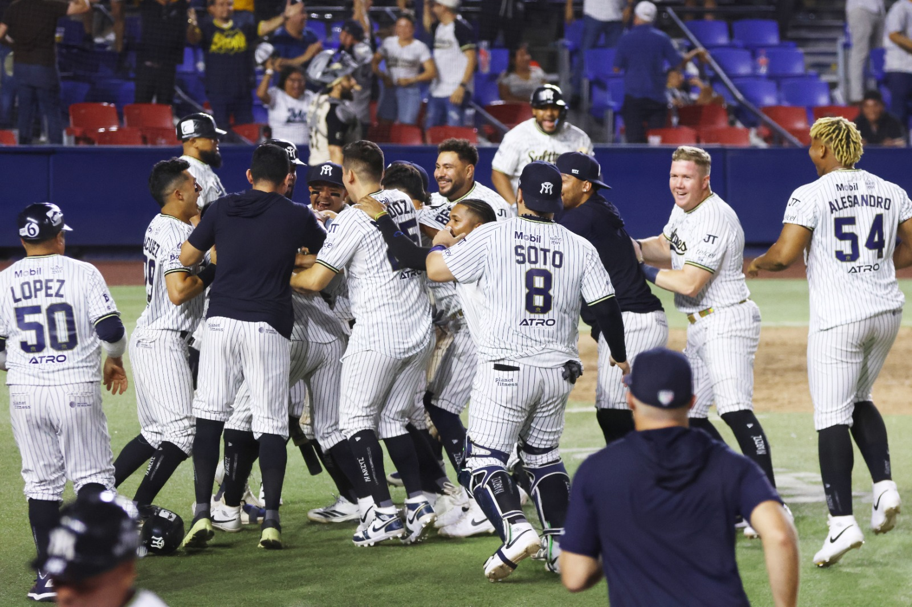

Gana quien anota más
El equipo que batea busca recorrer las bases y regresar a home. Cada vuelta completa de un corredor suma una carrera.
Info · Dentro del diamante
Del primer lanzamiento al último out. Conoce el juego, sus ligas y las historias que hacen del béisbol una pasión en México.
Entrar al juego
La primera entrada
Lo esencial para seguir el partido y disfrutar cada jugada.
El equipo que batea busca recorrer las bases y regresar a home. Cada vuelta completa de un corredor suma una carrera.
En la parte alta batea el visitante; en la baja, el local. Los equipos se alternan entre atacar y defender.
La defensa intenta sacar a tres bateadores o corredores. Al conseguirlo, termina esa mitad de la entrada.
Un juego regular está previsto a nueve entradas. Si hay empate, puede extenderse a extra innings.
Dos temporadas, la misma afición
Aprende a distinguir las dos ligas que encontrarás en nuestro calendario.
Desde 1925, sus equipos representan a ciudades de distintas regiones del país. Su temporada se vive en primavera y verano, y continúa con los playoffs rumbo al campeonato.
Ver calendario LMB Conoce su historia en LMB
Su historia se remonta a la Liga de la Costa del Pacífico de 1945. Se disputa en otoño e invierno, con una identidad ligada a las ciudades y aficiones del Pacífico mexicano.
Ver calendario LMP Conoce su historia en LMPUn mismo equipo puede tener presencia en ambas ligas. Elige LMB o LMP en Calendario para consultar la competencia que buscas.
Otoño · InviernoMomentos que nos trajeron hasta aquí
Del nacimiento de las ligas a los escenarios internacionales.
6 etapas
El 28 de junio se juega el primer partido oficial de la Liga Mexicana de Beisbol, en el Parque Franco Inglés de la Ciudad de México.
La primera jornada · LMBLa Liga de la Costa del Pacífico inicia el 27 de octubre con cuatro equipos. Es el punto de partida de la tradición invernal de la LMP.
Los primeros años · LMPMonterrey conquista la Serie Mundial de Pequeñas Ligas. Ángel Macías lanza un juego perfecto en la final y el equipo mexicano hace historia.
El equipo de Monterrey · Little LeagueFernando Valenzuela gana el Cy Young y el premio al Novato del Año en la misma temporada. Su impacto acerca a miles de aficionados al juego.
La temporada de Fernando · Hall of FameLa selección mexicana alcanza por primera vez las semifinales del Clásico Mundial y entusiasma a una nueva generación.
México y el Clásico · MLBLa liga celebra su centenario: un siglo de equipos, estadios, rivalidades y generaciones que comparten la misma afición.
El centenario · Correos de MéxicoHabla béisbol
Abre cada término y llega al siguiente partido con más juego.
Un batazo válido que permite al bateador llegar a una base sin depender de un error de la defensa ni de una selección del fildeador.
Un batazo que permite recorrer todas las bases y anotar en la misma jugada. Cuando la pelota sale del campo por territorio válido, también anotan los corredores en base.
Se marca strike, entre otros casos, si el bateador intenta y no conecta o deja pasar un lanzamiento dentro de la zona. Tres strikes producen un ponche; algunas jugadas de tercer strike tienen excepciones.
Cuando el bateador recibe cuatro lanzamientos marcados como bola, obtiene el derecho a avanzar a primera base.
Una jugada de la defensa que consigue dos outs durante la misma acción. Puede cambiar por completo una entrada.
Las entradas adicionales que se juegan cuando el partido regular termina empatado. Continúan hasta que se define un ganador, según las reglas de la competencia.
La siguiente jugada es tuya
Busca el próximo partido, pon a prueba lo que sabes y sigue construyendo tu colección.
Fotografías de la Liga Mexicana de Beisbol, conservadas en las galerías del proyecto.